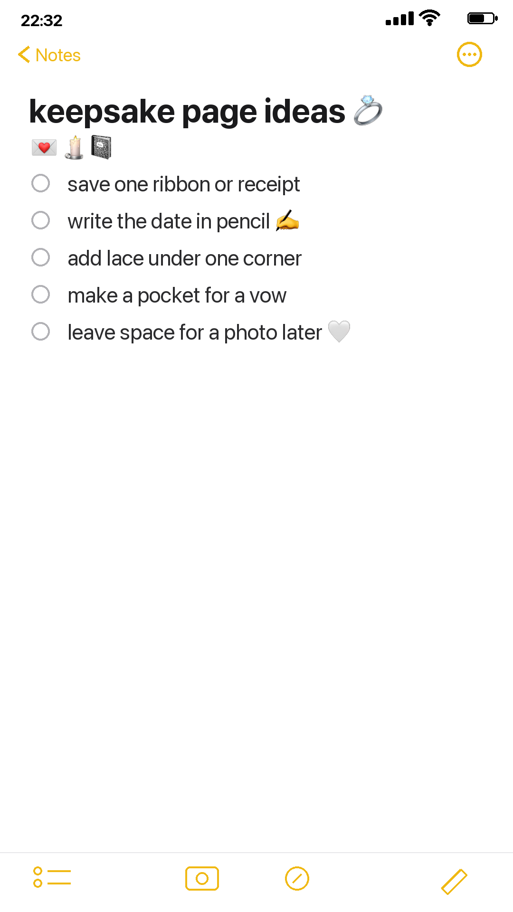

A wedding keepsake page does not need to be formal. It can be small, quiet, and full of little evidence: ribbon, lace, receipt, date, one folded note.



Use pockets for private pieces
A vow, a tiny note, or a receipt can tuck behind the main page instead of becoming the focal point.